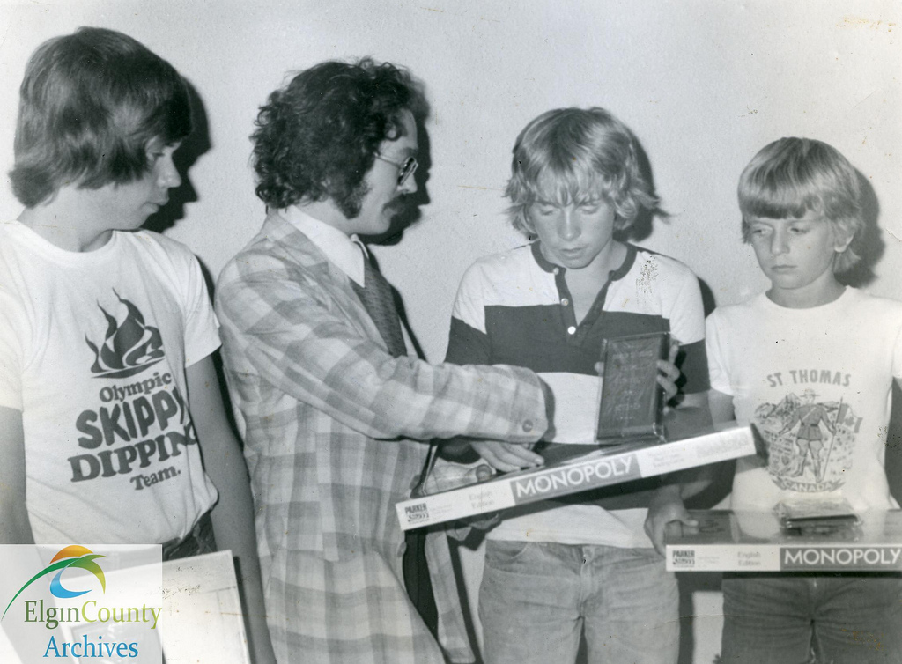

El juego de mesa más vendido de la historia
Antes
Un juego creado con la función de servir como herramienta para enseñar las teorias acerca de la justicia sacial y económica extraidas del estudio titulado Progreso y Miseria de Henry George
Monopoly
Comercializado por vez primera en le año de 1936
A lo largo de 80 años, el juego a sufrido una notable evolución. Sus múltiples ediciones y sus tantas versiones han dado pie a que se camiara desde la caja que lo cambiara desde la caja que lo ontiene hasta los elementos que lo componen. Logrando asi, mantenerse como el favorito a través de las décadas.
Ahora
Con los años la finalidad del juego cambió para solo disfrutar un buen rato, negociano propiedades y hasta haciendo uso de medios electrónicos para todas las transacciones que requiere el juego.